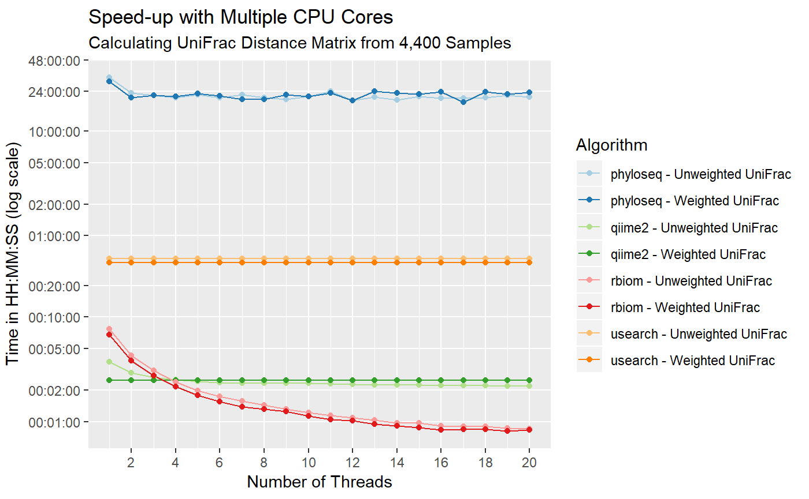
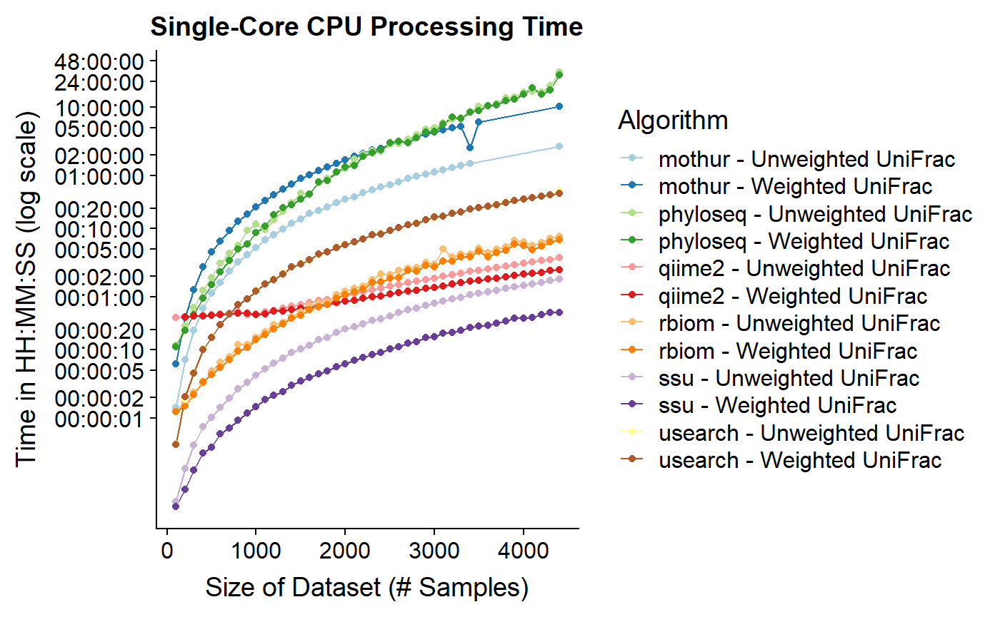
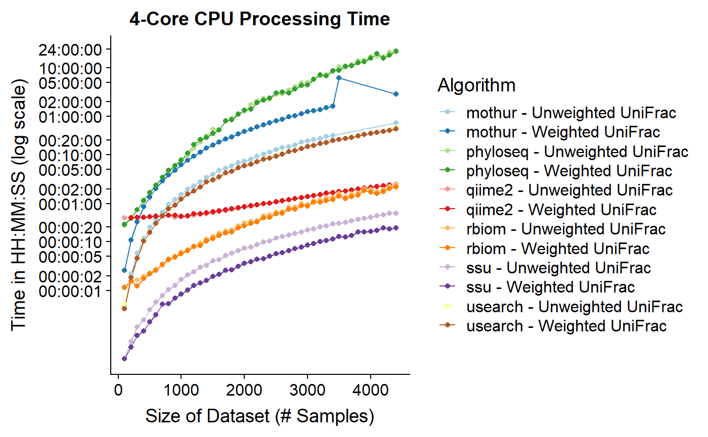
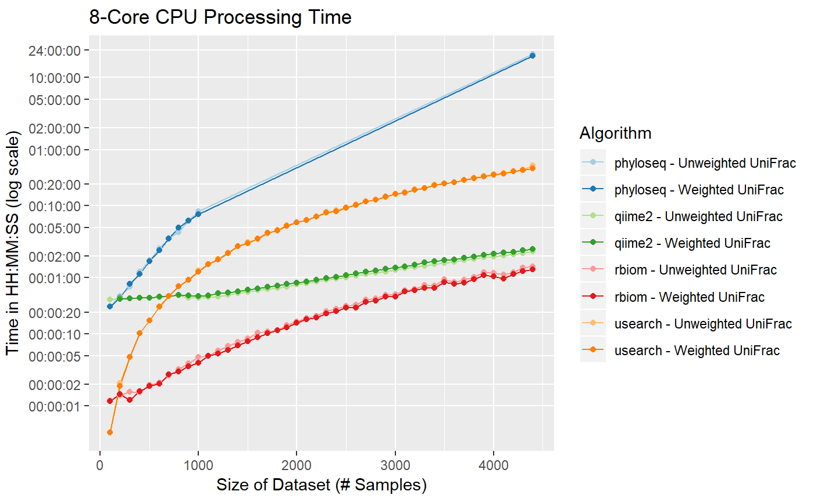

benchmark.RmdHere we will compare rbiom to similar packages by measuring the time taken to complete common operations on a representative dataset.
For our tests, we’ll use a virtual machine on Amazon Web Service’s Elastic Compute Cloud. Specifically: * US-West region * AMI 482e6430 (QIIME 2 Core) * c3.8xlarge instance type (32 virtual CPUs) * 20 GiB General Purpose SSD (GP2) Storage on Root Volume
Both the username and password are ‘qiime2’. On this instance, qiime2 is already configured. The following will download and install rbiom, phyloseq, and usearch as well as the test dataset.
sudo apt-get install build-essential gfortran libssl-dev unzip
export TAR=/bin/tar
R -e 'source("http://bioconductor.org/biocLite.R"); biocLite(c("phyloseq", "rhdf5"))'
R -e 'install.packages(c("devtools", "doParallel"), repos="http://cran.us.r-project.org");'
R -e 'devtools::install_git("https://github.com/cmmr/rbiom.git")'
wget https://s3.amazonaws.com/jplab/share/30d/usearch10.0.240
chmod a+x usearch10.0.240
wget https://raw.githubusercontent.com/cmmr/rbiom/master/vignettes/data/hmp500.biomThe example data is taken from the publicly available Human Microbiome Project. The master data set contains 4,468 samples with 4,468,000 observations of 1,140 OTUs. These samples have been rarefied to 1000 obervations per sample. The below script will randomly subset the master file to n samples, where n begins at 100 samples and is incremented by 100 all the way to 4,400. This will allow us to see how programs handle inputs of varying sizes.
prep_data.r:
library(rbiom)
dir.create("in")
dir.create("out")
setwd("in")
x <- read.biom("https://s3.amazonaws.com/jplab/projects/hmp/hmp4468.biom")
for (i in 1:44) {
n <- i * 100
y <- select(x, sample.int(4468, n))
y$taxonomy <- NULL
write.biom(y, paste0("hmp", n, ".tab"), "tab")
write.tree(y$phylogeny, paste0("hmp", n, ".tre"))
cmd <- sprintf('biom convert -i hmp%i.tab -o hmp%i.json --table-type="OTU table" --to-json', n, n)
system(command = cmd, wait = FALSE, ignore.stdout = TRUE, ignore.stderr = TRUE)
}Create four scripts, one per program. These scripts will be the minimal steps needs to read in a biom file and newick, compute a distance matrix, then save the results to a tsv file. Each script will accept three arguments: (1) the number of cpu cores to use, (2) a single character ‘w’ or ‘u’ indicating whether to run weighted or unweighted unifrac, and (3) the input file to use in terms of number of samples.
# RScript for running rbiom
#---------------------------------------
cat > rbiom.r << EOF
args <- commandArgs(trailingOnly=TRUE)
options('rbiom.max.threads' = as.integer(args[1]))
bFile <- paste0("in/hmp", args[3],".json")
tFile <- paste0("in/hmp", args[3],".tre")
oFile <- paste0("out/rbiom_", args[2], "_dm", args[3],".tsv")
dm <- rbiom::unifrac(
biom = rbiom::read.biom(bFile),
tree = rbiom::read.tree(tFile),
weighted = identical(args[2], 'w') )
write.table(as.matrix(dm), oFile, sep="\t", quote=FALSE)
EOF
# RScript for running phyloseq
#---------------------------------------
cat > phyloseq.r << EOF
library(methods)
args <- commandArgs(trailingOnly=TRUE)
cpus <- as.integer(args[1])
if (cpus > 1)
doParallel::registerDoParallel(parallel::makePSOCKcluster(cpus))
bFile <- paste0("in/hmp", args[3],".json")
tFile <- paste0("in/hmp", args[3],".tre")
oFile <- paste0("out/phyloseq_", args[2], "_dm", args[3],".tsv")
dm <- phyloseq::UniFrac(
phy = phyloseq::import_biom(bFile, tFile),
weighted = identical(args[2], 'w'),
parallel = cpus > 1,
normalized = FALSE )
write.table(as.matrix(dm), oFile, sep="\t", quote=FALSE)
EOF
# Shell script for running qiime2
#---------------------------------------
cat > qiime2.sh << EOF
if [ \$2 = "u" ]; then metric="unweighted_unifrac"; else metric="weighted_unifrac"; fi
qiime tools import --input-path in/hmp\$3.json --output-path json --type FeatureTable[Frequency] --source-format BIOMV100Format
qiime tools import --input-path in/hmp\$3.tre --output-path tree --type Phylogeny[Rooted] --source-format NewickFormat
qiime diversity beta-phylogenetic-alt --i-table json.qza --i-phylogeny tree.qza --p-metric \$metric --output-dir qiime_out --p-n-jobs \$1
qiime tools export --output-dir qiime_out qiime_out/distance_matrix.qza
mv qiime_out/distance-matrix.tsv out/qiime2_\$2_dm\$3.tsv
rm -rf json.qza tree.qza qiime_out
EOF
# Shell script for running usearch
#---------------------------------------
cat > usearch.sh << EOF
if [ \$2 = "u" ]; then metric="unifrac_binary"; else metric="unifrac"; fi
./usearch10.0.240 -beta_div in/hmp\$3.tab -metrics \$metric -tree in/hmp\$3.tre -quiet
mv \$metric.txt out/unifrac_\$2_dm\$3.tsv
rm \$metric.sorted.txt
rm \$metric.tree
EOFFinally, execute and time each script.
/usr/bin/time -f 'Time: %E Memory: %M\n' Rscript rbiom.r 8 u 500
/usr/bin/time -f 'Time: %E Memory: %M\n' Rscript phyloseq.r 8 u 500
/usr/bin/time -f 'Time: %E Memory: %M\n' /bin/sh qiime2.sh 8 u 500
/usr/bin/time -f 'Time: %E Memory: %M\n' /bin/sh usearch.sh 8 u 500Results using 8 cores, unweighted unifrac, and 500 samples:
| Package | Time (sec) | Memory (kb) |
|---|---|---|
| qiime2 | 31 | 690176 |
| phyloseq | 106 | 1759328 |
| usearch | 15 | 17488 |
| rbiom | 1 | 326624 |
Results using 1 core, weighted unifrac, and 4400 samples:
| Package | Time (sec) | Memory (kb) |
|---|---|---|
| rbiom | 408 | 2938848 |
| qiime2 | 149 | 1952272 |
| usearch | 1987 | 603088 |
Results using 20 cores, unweighted unifrac, and 4400 samples:
| Package | Time (sec) | Memory (kb) |
|---|---|---|
| rbiom | 51 | 3106112 |
| qiime2 | 130 | 2300656 |
Qiime2 says: Weighted UniFrac is not parallelizable Weighted Output matrices: rbiom == phyloseq != usearch Unweighted Output matrices: rbiom == phyloseq == qiime2 != usearch And unifrac_binary also doesn’t equal normalized unweighted phyloseq
Set these off in a loop
for i in {100..4400..100}
do
/usr/bin/time -a -o ~/results.txt -f "usearch 1 w $i %e %M" /bin/sh usearch.sh 1 w $i
/usr/bin/time -a -o ~/results.txt -f "usearch 1 u $i %e %M" /bin/sh usearch.sh 1 u $i
/usr/bin/time -a -o ~/results.txt -f "qiime2 1 w $i %e %M" /bin/sh qiime2.sh 1 w $i
for j in {1..20}
do
/usr/bin/time -a -o ~/results.txt -f "qiime2 $j u $i %e %M" /bin/sh qiime2.sh $j u $i
/usr/bin/time -a -o ~/results.txt -f "rbiom $j w $i %e %M" Rscript rbiom.r $j w $i
/usr/bin/time -a -o ~/results.txt -f "rbiom $j u $i %e %M" Rscript rbiom.r $j u $i
/usr/bin/time -a -o ~/results.txt -f "phyloseq $j w $i %e %M" Rscript phyloseq.r $j w $i
/usr/bin/time -a -o ~/results.txt -f "phyloseq $j u $i %e %M" Rscript phyloseq.r $j u $i
done
done
export i=4400
for j in {1..20}
do
/usr/bin/time -a -o ~/results.txt -f "phyloseq $j w $i %e %M" Rscript phyloseq.r $j w $i
/usr/bin/time -a -o ~/results.txt -f "phyloseq $j u $i %e %M" Rscript phyloseq.r $j u $i
doneMake some graphs
## Warning: package 'ggplot2' was built under R version 3.5.1results <- read.delim(
file = "C:/Users/Daniel/Desktop/results.txt",
sep = ' ',
col.names = c('Package', 'Threads', 'Algorithm', 'Input.Size', 'Time', 'Memory'),
row.names = NULL )
results[['Algorithm']] <- ifelse(results[['Algorithm']] == 'w', 'Weighted UniFrac', 'Unweighted UniFrac')
results[['Algorithm']] <- paste(results[['Package']], "-", results[['Algorithm']])
results <- plyr::ddply(results, c('Algorithm', 'Input.Size'), function (x) {
if (nrow(x) == 1) {
x <- data.frame(
'Package' = x[['Package']],
'Threads' = unique(results[['Threads']]),
'Algorithm' = x[['Algorithm']],
'Input.Size' = x[['Input.Size']],
'Time' = x[['Time']],
'Memory' = x[['Memory']]
)
}
return (x)
})
#==========================================
# 4400 sample dataset, varying cpu count
#==========================================
df <- subset(results, Input.Size == 4400)
ggplot(df, aes(group=Algorithm, color=Algorithm, x=Threads, y=Time)) +
geom_line() +
geom_point() +
scale_y_log10(
minor_breaks = c(),
breaks = c(c(1,2,5,10,20), c(1,2,5,10,20)*60, c(1,2,5,10,24,48)*3600),
labels = c("00:00:01","00:00:02","00:00:05","00:00:10","00:00:20",
"00:01:00","00:02:00","00:05:00","00:10:00","00:20:00",
"01:00:00","02:00:00","05:00:00","10:00:00","24:00:00",
"48:00:00") ) +
scale_x_continuous(breaks = c(1:10) * 2, minor_breaks = 1:20) +
scale_colour_brewer(palette = 'Paired') +
ggtitle("Speed-up with Multiple CPU Cores", "Calculating UniFrac Distance Matrix from 4,400 Samples") +
labs(x = "Number of Threads", y = "Time in HH:MM:SS (log scale)") +
theme(axis.title.y = element_text(vjust=2))
#==========================================
# Single-Core CPU, varying dataset size
#==========================================
df <- subset(results, Threads == 1)
ggplot(df, aes(group=Algorithm, color=Algorithm, x=Input.Size, y=Time)) +
geom_line() +
geom_point() +
scale_y_log10(
minor_breaks = c(),
breaks = c(c(1,2,5,10,20), c(1,2,5,10,20)*60, c(1,2,5,10,24,48)*3600),
labels = c("00:00:01","00:00:02","00:00:05","00:00:10","00:00:20",
"00:01:00","00:02:00","00:05:00","00:10:00","00:20:00",
"01:00:00","02:00:00","05:00:00","10:00:00","24:00:00",
"48:00:00") ) +
scale_colour_brewer(palette = 'Paired') +
ggtitle("Single-Core CPU Processing Time") +
labs(x = "Size of Dataset (# Samples)", y = "Time in HH:MM:SS (log scale)") +
theme(axis.title.y = element_text(vjust=2))
#==========================================
# 4-Core CPU, varying dataset size
#==========================================
df <- subset(results, Threads == 4)
ggplot(df, aes(group=Algorithm, color=Algorithm, x=Input.Size, y=Time)) +
geom_line() +
geom_point() +
scale_y_log10(
minor_breaks = c(),
breaks = c(c(1,2,5,10,20), c(1,2,5,10,20)*60, c(1,2,5,10,24,48)*3600),
labels = c("00:00:01","00:00:02","00:00:05","00:00:10","00:00:20",
"00:01:00","00:02:00","00:05:00","00:10:00","00:20:00",
"01:00:00","02:00:00","05:00:00","10:00:00","24:00:00",
"48:00:00") ) +
scale_colour_brewer(palette = 'Paired') +
ggtitle("4-Core CPU Processing Time") +
labs(x = "Size of Dataset (# Samples)", y = "Time in HH:MM:SS (log scale)") +
theme(axis.title.y = element_text(vjust=2))
#==========================================
# 8-Core CPU, varying dataset size
#==========================================
df <- subset(results, Threads == 8)
ggplot(df, aes(group=Algorithm, color=Algorithm, x=Input.Size, y=Time)) +
geom_line() +
geom_point() +
scale_y_log10(
minor_breaks = c(),
breaks = c(c(1,2,5,10,20), c(1,2,5,10,20)*60, c(1,2,5,10,24,48)*3600),
labels = c("00:00:01","00:00:02","00:00:05","00:00:10","00:00:20",
"00:01:00","00:02:00","00:05:00","00:10:00","00:20:00",
"01:00:00","02:00:00","05:00:00","10:00:00","24:00:00",
"48:00:00") ) +
scale_colour_brewer(palette = 'Paired') +
ggtitle("8-Core CPU Processing Time") +
labs(x = "Size of Dataset (# Samples)", y = "Time in HH:MM:SS (log scale)") +
theme(axis.title.y = element_text(vjust=2))